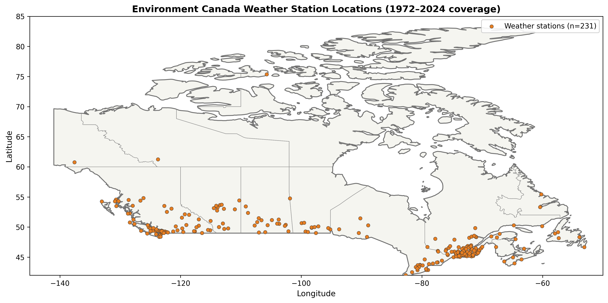
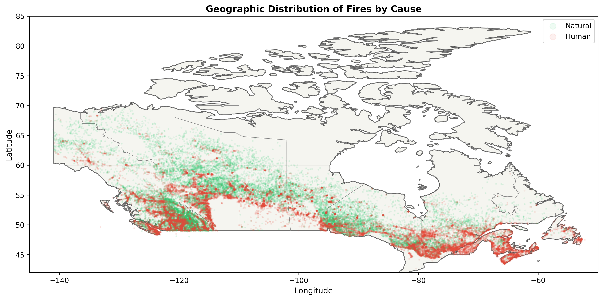
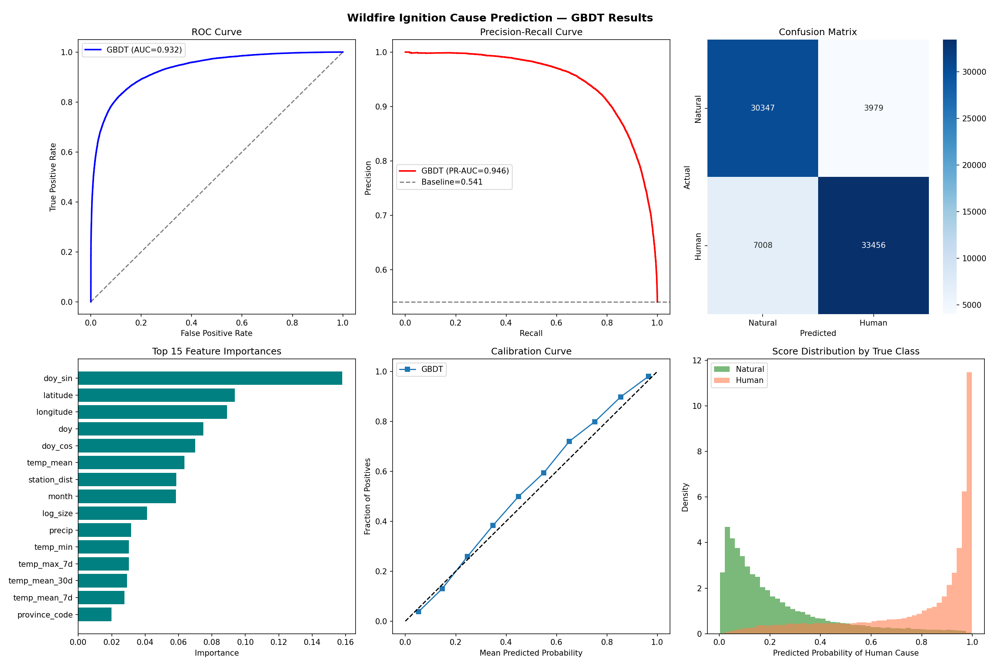
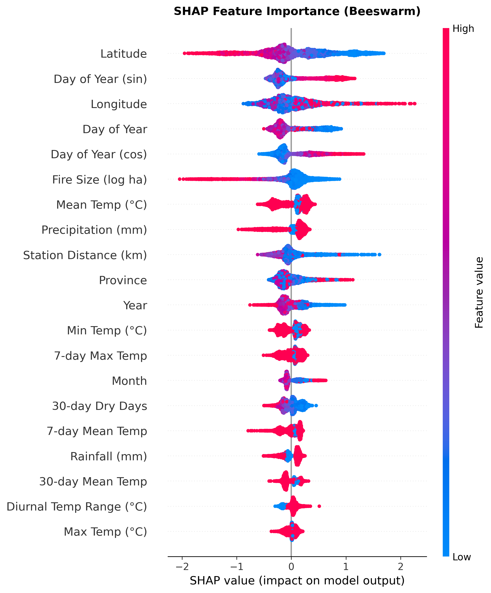
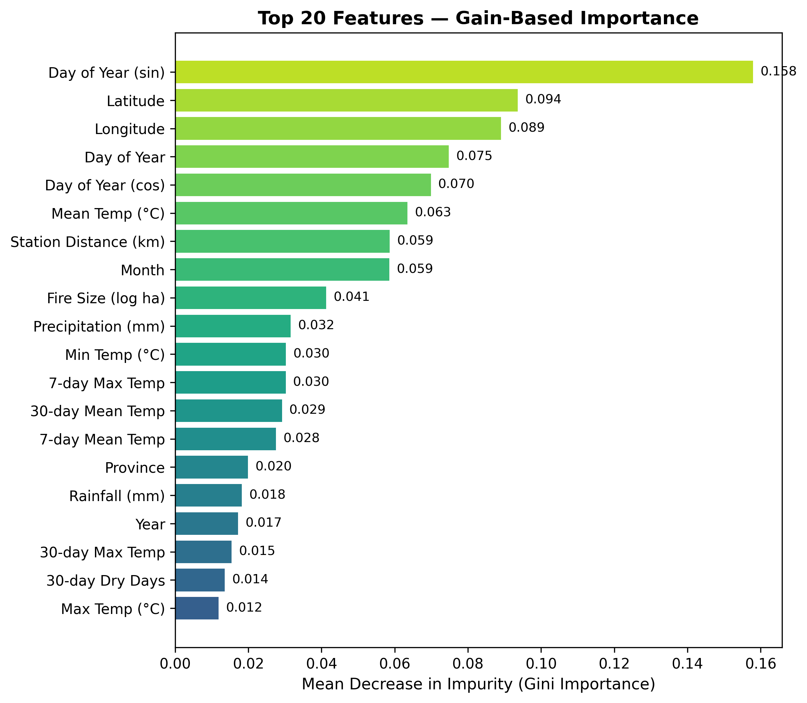
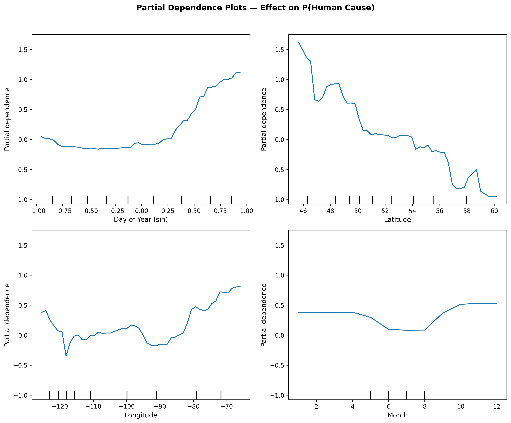
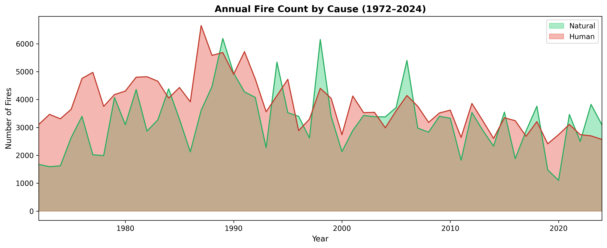
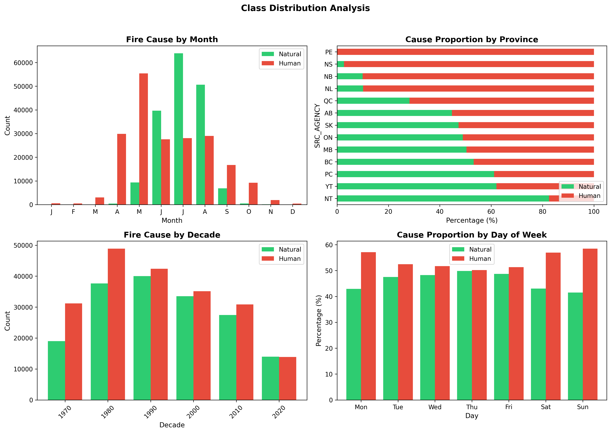

Using Machine Learning and Climate Data
Sai Paladugu · Ashok Sivathayalan · Queenie Kwan
Carleton University — Winter 2026
Can we predict whether a wildfire was naturally or human-caused based on temporal, geographic, and climate features?
Binary classification: Natural (lightning) vs. Human (accidental, negligence, industrial)

231 stations with full 1972–2024 coverage — density highest in southern Quebec and BC, sparse above 55°N.

50,000 fire sample — green = Natural, red = Human. Clear spatial separation.
DOY (cyclic sin/cos), month, year, weekend
Province, latitude, longitude
Log-transformed size (ha)
Temp, precip, snow, wind, diurnal range
7-day & 30-day: temp, precip, dry days
Temp anomaly, fire weather idx, station dist
+75% PR-AUC improvement over random baseline (0.541) — p < 0.001

| Predicted | |||
|---|---|---|---|
| Natural | Human | ||
| Actual | Natural | 30,347 | 3,979 |
| Human | 7,008 | 33,456 | |

Each dot = one fire. Color = feature value. Position = impact on prediction.


Marginal effect of each feature on P(Human Cause), holding others constant.

Human fires show stable year-to-year counts; natural fires are highly variable.

Questions?
COMP 4107/5107 — Data Science — Carleton University